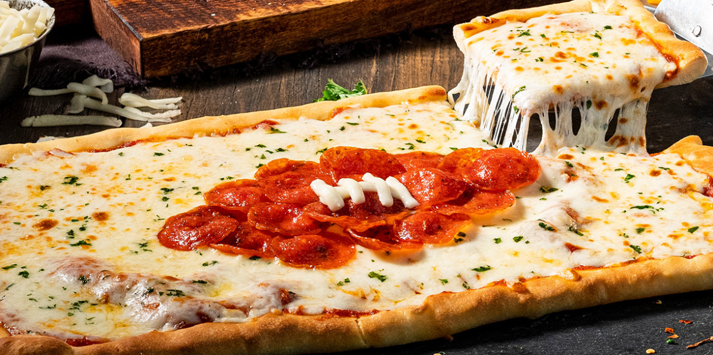

Cuban Style Pizza

Description
This cheesy pizza made with Sargento® Mozzarella Shredded Cheese and decorated with a pepperoni football is the perfect addition to your game day spread!
Ingredients
- 1 can Refrigerated pizza crust
- 2 tsp Olive oil
- 1/2 cup Pizza sauce
- 2 cups Sargento® Shredded Mozzarella Cheese
- 1/2 cup chopped parsley
- 2 packages (3 oz. each) sliced pepperoni
- 1 stick Sargento® String Cheese
Steps
- Heat oven to 425°F. Spray cookie sheet with cooking spray. Unroll dough on cookie sheet; starting at center, press out dough into 14x12-inch rectangle. Brush dough with olive oil; bake 7 minutes.
- Spread pizza sauce evenly over crust; top with mozzarella cheese and parsley. Arrange pepperoni in football shape on center of pizza. Cut string cheese lengthwise into 4 strips (save 2 for another use). To make football laces, place 1 strip horizontally on center of football. Cut remaining strip into 5 pieces; arrange vertically on top of horizontal strip.
- Bake 10 to 13 minutes longer or until crust is deep golden brown and cheese is melted.